UDN
Search public documentation:
LevelEditorUserGuide
日本語訳
中国翻译
한국어
Interested in the Unreal Engine?
Visit the Unreal Technology site.
Looking for jobs and company info?
Check out the Epic games site.
Questions about support via UDN?
Contact the UDN Staff
中国翻译
한국어
Interested in the Unreal Engine?
Visit the Unreal Technology site.
Looking for jobs and company info?
Check out the Epic games site.
Questions about support via UDN?
Contact the UDN Staff
Level Editor User Guide
Document Summary: Guide to using the Unreal Engine Level Editor. Document Changelog: Created; Updated by Jeff Wilson.Introduction
The Unreal Level Editor is the core editing tool in UnrealEd. It is in this editor that worlds or levels are created - levels that are built from BSP and Static Mesh geometry, as well as Terrain. They contain Lights and other Actors, AI Path Nodes, and Scripted Sequences. This document will give an overview of the Level Editor interface and how to create levels.Using the Level Editor
This section goes over the absolute basics of opening the editor and running through creating a basic level.Opening the Editor
The Level Editor is open when you open UnrealEd. See the Opening UnrealEd? page for more details on how to open UnrealEd.Creating a Level
It can be benefit you to walk through the process of creating a simple level before trying diving into every single menu, button, tool, and command available in the level editor. For an introduction on creating a simple level, see the Creating Levels page.Level Editor Overview
This section provides a quick overview of the components that make up the level editor’s interface, the controls used to manipulate and navigate the viewports, and special keys that are commonly used to make tasks much more efficient to complete.Editor Interface
The level editor window is divided into several parts of its own: 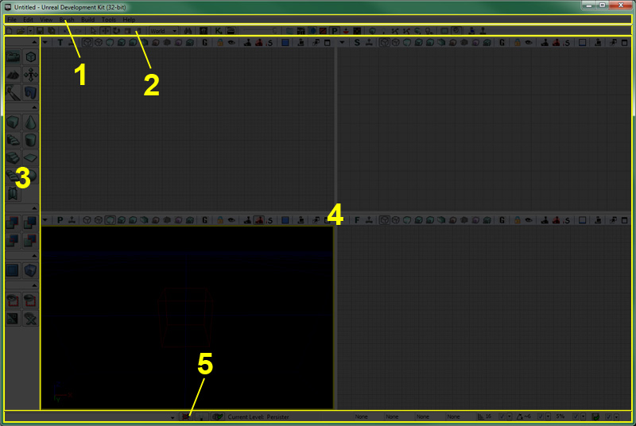- Menu bar
- Toolbar
- Toolbox
- Viewports
- Status bar
Menu Bar
The menu bar in the level editor should be familiar to anyone who has used Windows applications previously. It provides access to a great deal of tools and commands that are needed when progressing through the process of creating levels with UnrealEd. For more information about the Menu Bar, see the Editor Menu Bar page.Tool Bar
The toolbar, like in most application, is a group of commands providing quick access to commonly used tools and commands. Many of the items found in the menus of the level editor can also be found as buttons in the toolbar. For more information about the Tool Bar, see the Editor Tool Bar page.Toolbox
The toolbox is a set of tools used to control the mode the level editor is currently in, reshape the builder brush, create new BSP geometry and volumes, and control visibility and selection of actors within the viewports. For more information about the Toolbox, see the Editor Toolbox page.Viewports
The viewports of the level editor are your windows into the worlds you create in UnrealEd. Offering multiple orthographic views (Top, Side, Front) and a perspective view, you have complete control over what you see as well as how you see it. For more information about the viewport toolbar in UnrealEd, see the Viewport Tool Bar page. For a guide to the different View Modes in UnrealEd, see the View Modes page. For a guide to the different Show Flags in UnrealEd, see the Show Flags page.Controls
Knowing the viewport navigation controls as well as the keyboard controls and hotkeys can help to speed up your workflow and save time in the long run.Mouse Controls
For a list of mouse controls see the Editor Buttons page.Keyboard Controls
For a list of keyboard controls see the Editor Buttons page.Hot Keys
For summary of how to bind editor hotkeys and create new editor hotkey commands, see the Editor Hot Keys page.Working with Levels
The level creation process can be boiled down to a few integral tasks: placing actors, selecting actors, transforming actors, modifying actors. In other words, to create a level, actors will be placed into a map, moved around to create an environment, and their properties will be modified to cause them to look or behave appropriately.Placing Actors
Each map begins as a blank slate. To build the desired environment or populate the world, actors must be placed in the map. There are a few different ways this can be done, but they all result in a new instance of a certain class being created which can then be moved around or have its properties modified. The different methods of placing new actors into a map are detailed below.From Content Browser
Certain types of assets can be selected in the Content Browser and then assigned to new instance of an appropriate type of actor by right-clicking in one of the viewports and choosing “Add Actor >”. This will display a flyout menu with a list of possible actor types to add using the selected asset. 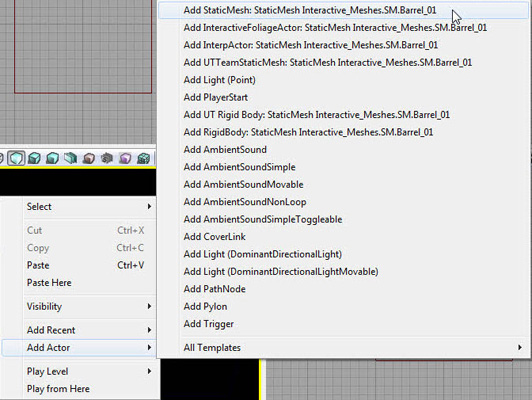 If the asset is not currently loaded, the option to load the asset will be listed at the bottom of the flyout menu. Choosing this option will load the asset and then display the flyout menu with the options of actor types to add. 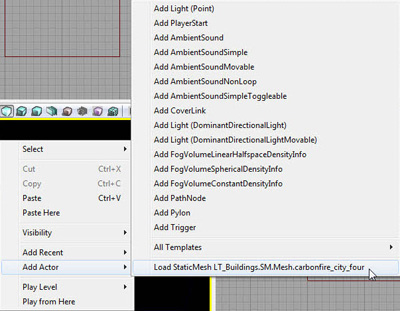 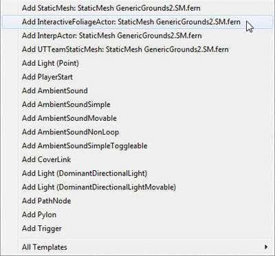 The types of assets that can be placed within a map from the Content Browser are:- Static Meshes
- Skeletal Meshes
- Physics Assets
- Fractured Static Meshes
- Particle System
- Speed Trees
- Sound Cue
- Sound Wave
- Lens Flare
Drag and Drop
In addition to being able to add specific types of actors from the Content Browser to a map through the viewport context menu, these can also be added simply by dragging an asset from the Content Browser and dropping it onto one of the viewports in the location you would like the actor to be placed. When doing so, the cursor will change so that you know that type of asset can be dropped onto a viewport. 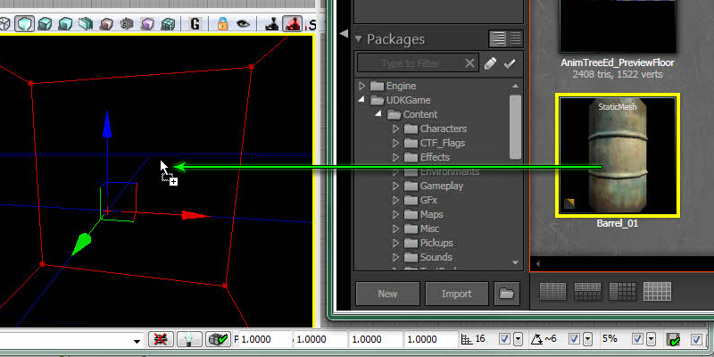 When dragging and dropping an asset from the Content Browser, the following types of actors are created for the associated type of asset:- Static Meshes - places a StaticMeshActor
- Skeletal Meshes – Places a SkeletalMeshActor
- Physics Assets – Places a KAsset
- Fractured Static Meshes – Places a FracturedStaticMeshActor
- Particle System – Places an Emitter
- Speed Trees – Places a SpeedTreeActor
- Sound Cue – Places an AmbientSound
- Sound Wave – Places an AmbientSoundSimple
- Lens Flare – Places a LensFlareSource
From Actor Browser
While drag and drop is extremely efficient and easy to use, it only works for a specific subset of types of actors. Any and all types of placeable actors (shown in bold in the Actor Browser) can be added to a map by selecting a class of actor in the Actor Browser, right-clicking in one of the viewports, and choosing “Add NewSelecting Actors
Selecting actors, while simple in nature, is a very important part of the level editing process. If you can’t quickly select the correct group of actors, the process gets slowed down and productivity decreases. There are many different ways to select actors, or groups of actors. Each of these is detailed below.Simple Selection
The most basic method of selecting actors is simply to left-click on them in the viewport. Each click on an actor will deselect the currently selected actor and select the new one. If the Ctrl key is held down while clicking on a new actor, the new actor is added to the selection. 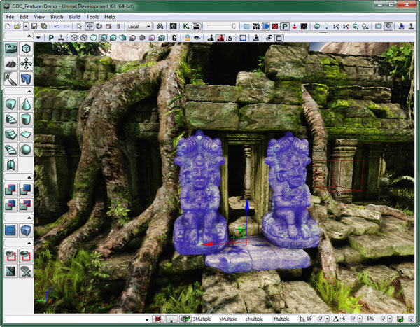 This way you can select a multiple actors which can then be moved as a group or properties shared by all of the selected actors can be modified in the Property Window. This method is good for selecting small numbers of actors or several isolated actors spread out across the map, but it can be slow and tedious for selecting large numbers of actors.Marquee Selection
A marquee selection is a quick way to select or deselect a group of actors within a certain area. This type of selection involves holding down a combination of keys, clicking one of the mouse buttons, and dragging the mouse cursor to create a box. All the actors within the box will be selected or deselected depending on the combination of keys and the mouse button that is clicked. 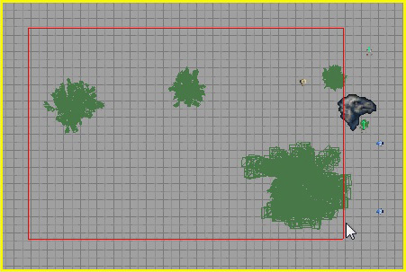 The possible combinations and their effects are:- Ctrl + Alt + LMB – Replaces the current selection with the actors contained in the box.
- Ctrl + Alt + Shift + LMB – Adds the actors contained in the box to the current selection.
- Ctrl + Alt + Shift + RMB – Removes any select actors in the box from the current selection.
Select by Class / Select by Asset / Select by Property
These types of selection allow you to select a group of actors depending on the class of actor, the use of a specific asset, or having a specific value of a certain property. These will require an actor to already be selected (in the case of selecting by class or asset) or a property and value to have been made active. These selections can be made through the viewport context menu. 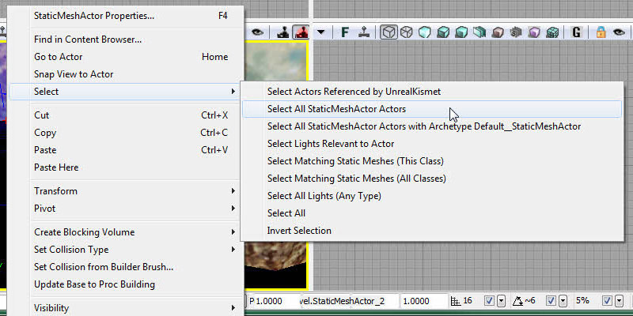Transforming Actors
Transforming actors refers to the moving, rotating, or scaling of the actors. It shouldn’t be any surprise that this is a huge part of the level editing process. There are two basic ways to transform actors in the level editor.Manual Transformation
The first method involves changing the values manually in the Property Window. You have access to all of the important transform properties of any actor in the Property Window under the Movement section (Location and Rotation) and the Display section (Draw Scale and Draw Scale 3D). While this certainly gives you the most fine-grained control over the placement, orientation, and size of an actor, it is far from intuitive and often leads to a great deal of trial and error while changing the values over and over. 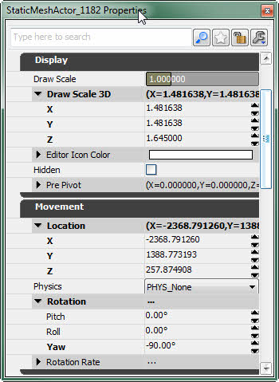Interactive Transformation
The second method involves the use of a visual tool displayed in the viewport that allows you to use the mouse to move, rotate, and scale the actor interactively directly in the viewport. This has the exact opposite pros and cons of the manual method. While it is extremely intuitive to use this method, it can be far from precise which is necessary in some circumstances. The drag grid, rotation grid, and scale grid can help in this aspect. The ability to snap to known values or in known increments allows for more precise control. This method also allows you to choose the reference coordinate system you wish to use when doing the transformation. This means you can transform the actor in world space, along the world axes, or you can transform the actor in its own local space, or along its local axes. This provides a lot more flexibility and would close to impossible to do simply by setting the values manually; at least without doing a great deal of complex calculations first. 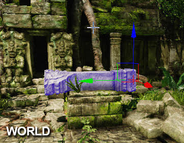 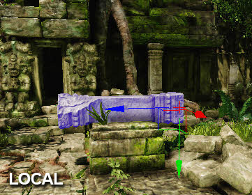 The visual tool used to manipulate the actors in the viewports is known as a transformation widget. In general a transform widget is made up of several parts which are color-coded according to which axis they effect. Red means the X-axis will be affected. Green means the Y-Axis will be affected. Blue means the Z-Axis will be affected. It can take several forms depending on what type of transformation is desired. These are outlined below.Translation Widget
The translation widget consists of a set of color-coded arrows pointing down the positive direction of each axis in the world. Each of these arrows is essentially a handle that can be grabbed (by left-clicking the mouse on it) and dragged to move the selected actor(s) along that particular axis. When the mouse is over one of the handles, the cursor will change and the handle will turn yellow signifying that clicking and dragging will move the object along that axis. 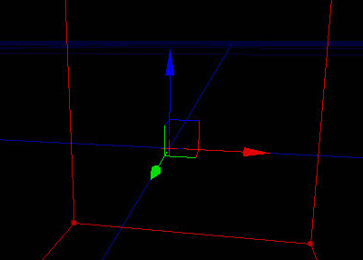 There is also a line coming off each handle along each of the other axes that meet up with one another. These form squares aligned with one of each of the planes (XY, XZ, YZ). Clicking the mouse on one of these and dragging will move the actor along the plane, essentially limiting movement to the two axes making up the plane. Again, when the mouse is hovered over one of these squares, the cursor will change and the two associated handles will turn yellow. 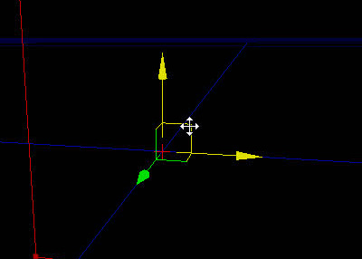Rotation Widget
The rotation widget is a set of three color-coded circles each associated with one of the axes that, when grabbed and dragged, will cause the selected actor(s) to rotate around the associated axis. In the case of the rotation widget, the axis affected by any one of the circles involved is the one perpendicular to the circle itself. This means that the circle aligned to the XY plane will actually rotate the actor around the Z-axis. As with the translation widget, when the mouse hovers over a particular circle, the cursor will change and that circle will turn yellow. 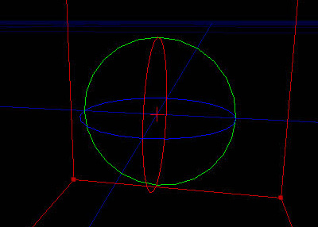Uniform Scale Widget
The uniform scale widget is a set of three handles that when grabbed and dragged will scale the selected actor in all three axes at the same time uniformly. It is similar in appearance to the translation widget except that the ends of each handle are small cubes instead of arrows. Also, since grabbing any of the handles affects all three axes, all the handles are simply colored red instead of being colored according to a particular axis. 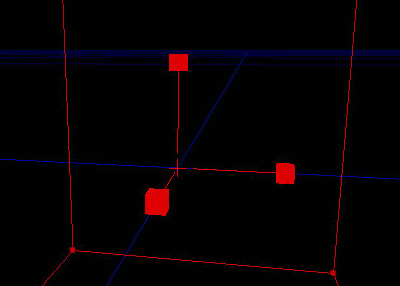Non-Uniform Scale Widget
The non-uniform scale widget is almost identical to the uniform scale widget except that the individual handles, when grabbed and dragged, will cause the selected actor to be scaled only along the associated axis. As such, the handles are color-coded in a similar fashion to the translation and rotation widgets. Also, this widget has the ability to scale in two axes at the same time in much the same manner that the translation widget can move along a plane. 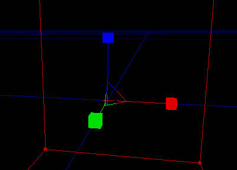Detail Level
Unreal Engine 3 provides the ability to use a detail level setting to assign actors within a map to only be displayed when the detail level of the engine is at or below that level. This is extremely useful for making levels which have the ability to run well on various hardware configurations. Actors which are solely used to increase detail and not necessary at all to the gameplay of the level might be set to only appear when the highest detail level. Actors which are absolutely essential to gameplay would always be set to the lowest detail level, ensuring they were always visible no matter what the specifications of the user’s system may be. Setting the detail level of an actor can be performed in one of two ways. The first is to select the actor in the viewport, right-clicking the selected actor to open the viewport context menu, and selecting LOD Operations > Set Detail Level, and choosing the detail level (low, medium or high). 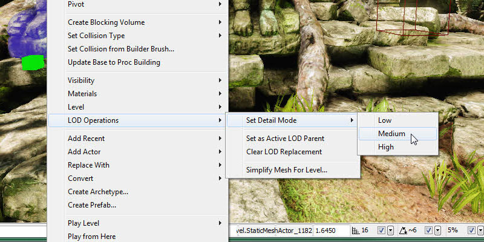 The other method is to select the actor, open its properties, and find the Detail Mode property for it. This second method is a little more difficult as this property will not always be in the same location on actors of different types, though you could always use the search functionality of the Property Window to quickly find it if need be. 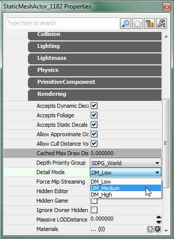 In addition to setting the detail level of any actor in the level editor, you also have the ability to preview the current level in any of the detail modes in order to get a better idea how the level will look to the end user. To do so, there is a Detail Mode option in the View menu with 3 checkable options: low, medium and high. This will filter your view so you only see Actors that are at or below the selected detail mode. Choosing low on this menu will display only the Actors that are set to low detail mode. Choosing medium on this menu will display on the Actors that are set to medium or low. And so on. 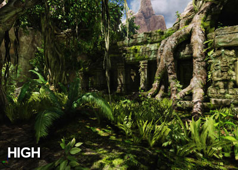 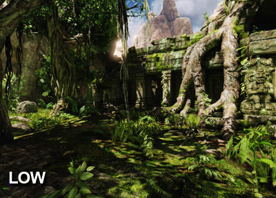Editor Performance
The editor can be extremely slow in large levels, especially when there are a lot of Actors on the screen. Here are some settings you can tweak to improve editor framerate. For Single Player levels, the single best option is Level Streaming Volume Previs. 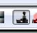 That will only show a few streaming levels around you, and there will be a big loading hitch when new levels stream in. Sometimes you need all levels to be visible though, that's where the rest of these options come in handy.- Distance to far clipping plane
- self-explanatory; a useful quick-fix. It's the slider bar next to the Redo button.
- Turn off realtime update
- self explanatory.
- G mode
- hides all editor debug information. Results may vary.
- Have lighting built
- not always possible but unbuilt lighting will make the editor much slower.
- Unlit movement
- self explanatory.
- Unlit view mode
- helpful when lighting is unbuilt.
- Show dynamicshadows
- helpful when lighting is unbuilt.
- Show selection
- This show flag defaults to on, which allows BSP selection to be visualized. When you don't need to see BSP selection, turning this off can make the editor quite a bit faster.
- Show scene captures
- Turning this off will give a decent speedup to scenes using them.